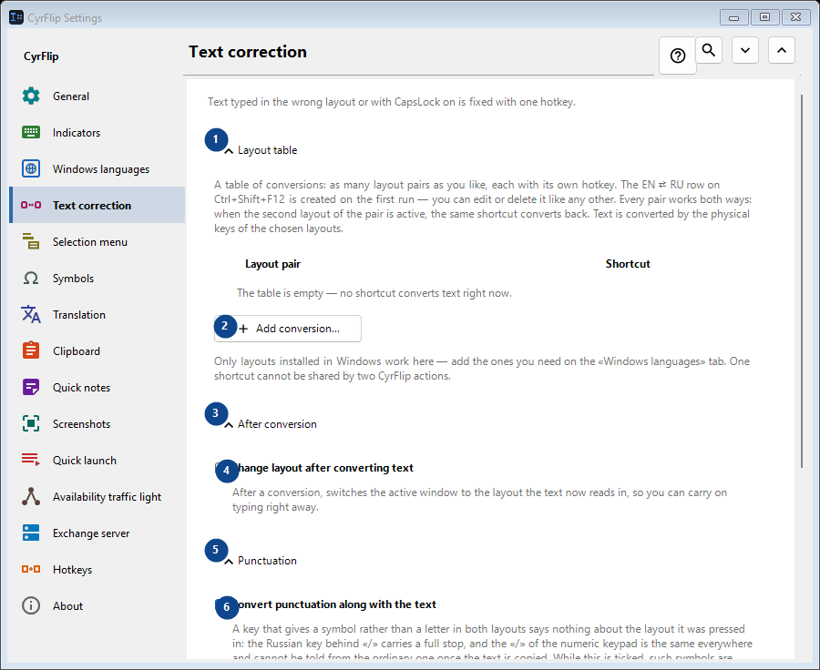
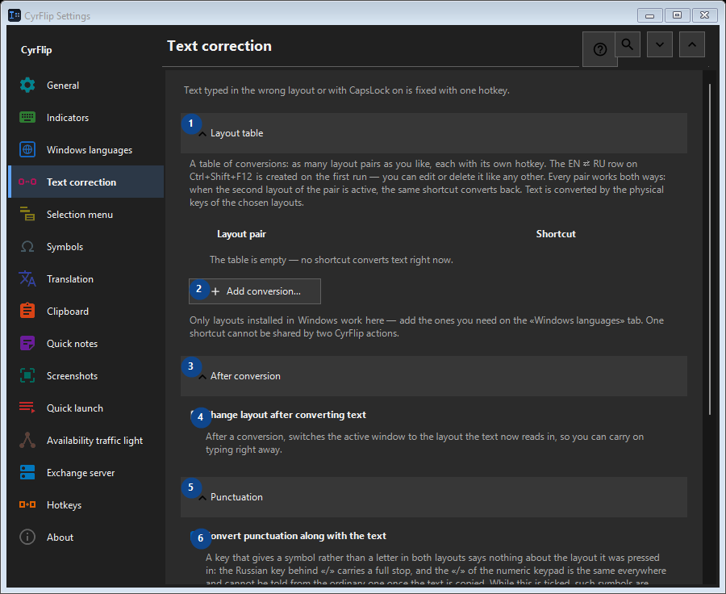

Text correction
What this is for
Text typed in the wrong layout or with CapsLock on is fixed with one hotkey.


In this order
Settings apply immediately. There is no required order; use the groups below.
The elements
1. Layout table
Use this command when you need the action named above. Review any confirmation before accepting it.
Your shortcuts2. Add conversion...
Use this command when you need the action named above. Review any confirmation before accepting it.
Your shortcuts3. After conversion
Use this command when you need the action named above. Review any confirmation before accepting it.
Your shortcuts4. Change layout after converting text
After a conversion, switches the active window to the layout the text now reads in, so you can carry on typing right away.
Your shortcuts5. Punctuation
Use this command when you need the action named above. Review any confirmation before accepting it.
Your shortcuts6. Convert punctuation along with the text
A key that gives a symbol rather than a letter in both layouts says nothing about the layout it was pressed in: the Russian key behind «/» carries a full stop, and the «/» of the numeric keypad is the same everywhere and cannot be told from the ordinary one once the text is copied. While this is ticked, such symbols are converted along with the text - the way CyrFlip has always behaved. Clear it if you type them on purpose more often: «/ghbdtn» then keeps its slash instead of starting with a full stop. Symbols whose key carries a letter in the other layout (the comma, the brackets) are converted either way.
Your shortcuts7. Letter case
Use this command when you need the action named above. Review any confirmation before accepting it.
Your shortcuts8. Case flip
Swaps upper and lower case in the selection; useful after accidentally enabling CapsLock.
Your shortcuts9. Change - Case flip
Use this command when you need the action named above. Review any confirmation before accepting it.
Your shortcuts10. Synchronize CapsLock after case correction
Changes the physical CapsLock state after case correction, so subsequent keystrokes match the corrected text.
Your shortcuts